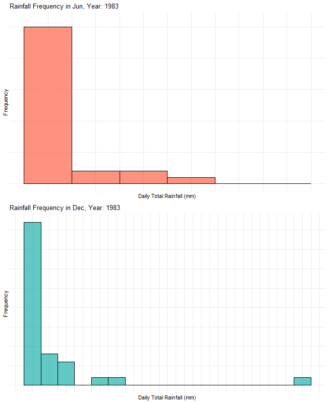

pacman::p_load(tidyverse,ggrepel,ggthemes,hrbrthemes,patchwork,dplyr, gifski, gapminder,plotly,gganimate,ggiraph,magick)Take-home Exercise 3: Be Weatherwise or Otherwise
1. Overview
1.1 Background

According to an infographic above by the National Climate Change Secretariat Singapore:
- Daily mean temperatures are projected to increase by 1.4 to 4.6 degrees celsius; and
- The contrast between the wet months (November to January) and dry months (February and June to September) is likely to be more pronounced.
1.2 The Task
As a visual analytics greenhorn, I am required to apply my newly acquired visual interactivity and uncertainty methods to validate the claims above.
For this take-home exercise, I have downloaded rainfall records from the Changi weather station as it has the most comprehensive dataset from 1983 to 2023, and will focus on validating claim 2 above, on the pronounced contrast between wet months and dry months.
June and December are my choice of dry and wet months for this analysis.
1.3 Designing Tool
The analytical visualisation will be prepared using R and appropriate R packages.
2. Set-up
2.1 Installing and loading the required libraries
The following code chunk is used to install the necessary R packages:
2.2 Importing the Dataset
I will import and combine the June and December datasets from across the years (1983, 1993, 2003, 2013 and 2023) into two dataframes, “combined_jun” and “combined_dec”. The code chunk is as follows:
jun1983 <- read_csv("data/DAILYDATA_S24_198306.csv",locale=locale(encoding="latin1")
)
jun1993 <- read_csv("data/DAILYDATA_S24_199306.csv",locale=locale(encoding="latin1")
)
jun2003 <- read_csv("data/DAILYDATA_S24_200306.csv",locale=locale(encoding="latin1")
)
jun2013 <- read_csv("data/DAILYDATA_S24_201306.csv",locale=locale(encoding="latin1")
)
jun2023 <- read_csv("data/DAILYDATA_S24_202306.csv",locale=locale(encoding="latin1")
)
combined_jun <- bind_rows(jun1983, jun1993, jun2003, jun2013, jun2023)dec1983 <- read_csv("data/DAILYDATA_S24_198312.csv",locale=locale(encoding="latin1")
)
dec1993 <- read_csv("data/DAILYDATA_S24_199312.csv",locale=locale(encoding="latin1")
)
dec2003 <- read_csv("data/DAILYDATA_S24_200312.csv",locale=locale(encoding="latin1")
)
dec2013 <- read_csv("data/DAILYDATA_S24_201312.csv",locale=locale(encoding="latin1")
)
dec2023 <- read_csv("data/DAILYDATA_S24_202312.csv",locale=locale(encoding="latin1")
)
combined_dec <- bind_rows(dec1983, dec1993, dec2003, dec2013, dec2023)
Note
The following error is shown if just “read_csv” function is used:
Error in nchar(x, “width”) : invalid multibyte string, element 1
There is hence a need to add “locale=locale(encoding=”latin1”)” within the “read_csv” function
Advice from Prof Kam
Some classmates made use of different ways to clean the data:
3. Overarching Design Idea
Before we go into data wrangling, analysis and visualisation, we first develop a plan on how we would want to validate the claim:
The contrast between the wet months (November to January) and dry months (February and June to September) is likely to be more pronounced.
The above means that dry months are likely to get drier and wet months are likely to get wetter.
Rainfall in these months could be considered in two ways, (i) Volume of rain and (ii) Frequency i.e. Days of rain.
My rough design ideas were as follows:

4. Data Wrangling
4.1 Filtering variables in the dataset
As we are only interested in rainfall data, we will just retain the first 5 variables in the “combined_jun” and “combined_dec” dataframes - “Station”, “Year”, “Month”, “Day”, “Daily Rainfall Total (mm)”.
jun_rainfall <- combined_jun %>% select(1:5)
dec_rainfall <- combined_dec %>% select(1:5)4.2 Saving as new datafiles
We will then save the “jun_rainfall” and “dec_rainfall” as new datafiles for further visualisation/analysis steps:
write_csv(jun_rainfall, "data/jun_rainfall.csv")
write_csv(dec_rainfall, "data/dec_rainfall.csv")This step checks that the new datafiles have been saved correctly:
jun_rainfall <- read_csv("data/jun_rainfall.csv")
dec_rainfall <- read_csv("data/dec_rainfall.csv")4.3 Checking for missing values
We check for the presence of missing values by using the following code chunk:
paste("There are",sum(is.na(jun_rainfall)),"missing values for Jun Rainfall dataset.")[1] "There are 0 missing values for Jun Rainfall dataset."paste("There are",sum(is.na(dec_rainfall)),"missing values for Dec Rainfall dataset.")[1] "There are 0 missing values for Dec Rainfall dataset."4.4 Converting selected variables to factors
For ease of different methods of visualisation downstream in the process, we will convert the “Year” and “Month” variables into integer data type as well as factors. The integer version will be named as “Year_num” and “Month_num” respectively.
variables <- c('Year', 'Month')
num_variables <- c('Year_num','Month_num')
jun_rainfall[num_variables] <- lapply(jun_rainfall[variables],as.integer)
dec_rainfall[num_variables] <- lapply(dec_rainfall[variables],as.integer)
jun_rainfall[variables] <- lapply(jun_rainfall[variables],factor)
dec_rainfall[variables] <- lapply(dec_rainfall[variables],factor)4.5 Creation of new variables “number_of_days_rain” and “percent_days_rain”
We will create new variables “number_of_days_rain” and “percent_days_rain” that calculates the number of days for which there is rain (more than 0 mm) and further divides by the total number of days in the month (30 days in Jun and 31 days in Dec) to form a percentage.
jun_rainfall <- jun_rainfall %>%
group_by(Year) %>%
mutate(number_of_days_rain = sum(`Daily Rainfall Total (mm)` != 0),
percent_days_rain = number_of_days_rain / 30 * 100)
dec_rainfall <- dec_rainfall %>%
group_by(Year) %>%
mutate(number_of_days_rain = sum(`Daily Rainfall Total (mm)` != 0),
percent_days_rain = number_of_days_rain / 31 * 100)4.6 Creation of summarised dataset for total monthly rainfall volume, frequency and distribution
We then create new datasets “combined_summed”, “combined_freq” and “combined_detailed”.
“combined_summed” dataset contains the variables “Year”, “Month” and “monthly_rainfall” obtained by summarising the total daily rainfall in Jun and Dec for the respective years in “jun_rainfall” and “dec_rainfall” datasets. It will be used for analysis of volume of rainfall.
“combined_freq” dataset contains contains the variables “Year”, “Month”, “number_of_days_rain” and “percent_days_rain”. It will be used for analysis of frequency of rainfall.
“combined_detailed” dataset contains contains the variables “Year”, “Month”, “Day” and “Daily Rainfall Total (mm)”. It will be used for analysis of detailed daily distribution of rainfall.
jun_rainfall_summed <- jun_rainfall %>%
group_by(Year,Month) %>%
summarise(`monthly_rainfall` = sum(`Daily Rainfall Total (mm)`))
dec_rainfall_summed <- dec_rainfall %>%
group_by(Year,Month) %>%
summarise(`monthly_rainfall` = sum(`Daily Rainfall Total (mm)`))
combined_summed <- bind_rows(jun_rainfall_summed,dec_rainfall_summed) %>%
mutate(Month=recode(Month,
"6"="Jun",
"12"="Dec"))
combined_summed# A tibble: 10 × 3
# Groups: Year [5]
Year Month monthly_rainfall
<fct> <fct> <dbl>
1 1983 Jun 94
2 1993 Jun 116.
3 2003 Jun 50.3
4 2013 Jun 111.
5 2023 Jun 228.
6 1983 Dec 371.
7 1993 Dec 308.
8 2003 Dec 273
9 2013 Dec 348.
10 2023 Dec 256. jun_rainfall_freq <- jun_rainfall %>%
group_by(Year_num,Month) %>%
select(number_of_days_rain,percent_days_rain) %>%
distinct()
dec_rainfall_freq <- dec_rainfall %>%
group_by(Year_num,Month) %>%
select(number_of_days_rain,percent_days_rain) %>%
distinct()
combined_freq <- bind_rows(jun_rainfall_freq,dec_rainfall_freq %>% select(-Year_num)) %>%
mutate(Month=recode(Month,
"6"="Jun",
"12"="Dec"))
combined_freq# A tibble: 10 × 4
# Groups: Year_num, Month [10]
Year_num Month number_of_days_rain percent_days_rain
<int> <fct> <int> <dbl>
1 1983 Jun 11 36.7
2 1993 Jun 18 60
3 2003 Jun 12 40
4 2013 Jun 12 40
5 2023 Jun 15 50
6 1983 Dec 17 54.8
7 1993 Dec 20 64.5
8 2003 Dec 18 58.1
9 2013 Dec 21 67.7
10 2023 Dec 23 74.2jun_rainfall_detailed <- jun_rainfall %>%
select(Year, Month, Day,`Daily Rainfall Total (mm)`)
dec_rainfall_detailed <- dec_rainfall %>%
select(Year, Month, Day,`Daily Rainfall Total (mm)`)
combined_detailed <- bind_rows(jun_rainfall_detailed,dec_rainfall_detailed) %>%
mutate(Month=recode(Month,
"6"="Jun",
"12"="Dec"))
combined_detailed# A tibble: 305 × 4
# Groups: Year [5]
Year Month Day `Daily Rainfall Total (mm)`
<fct> <fct> <dbl> <dbl>
1 1983 Jun 1 0
2 1983 Jun 2 15.7
3 1983 Jun 3 0
4 1983 Jun 4 0
5 1983 Jun 5 0
6 1983 Jun 6 14
7 1983 Jun 7 0
8 1983 Jun 8 0
9 1983 Jun 9 0.4
10 1983 Jun 10 27.7
# ℹ 295 more rows5. Data Exploration and Visualisation
5.1 Difference in overall distribution of daily rainfall between Jun and Dec over the years 1983 to 2023 (at 10-year intervals)
June and December were chosen as the dry and wet months for this analysis, based on what had been described in the claim.
Based on the analysis of the overall distribution of daily rainfall within both months over the years 1983, 1993, 2003, 2013 and 2023, we can observe that June is indeed a drier month as compared to December.
The median daily rainfall volume for June is 0 mm while the median daily rainfall volume for Dec is 1.4 mm. The maximum daily rainfall volume for June is 51.60 mm while the maximum daily rainfall volume for Dec is much higher at 164.40 mm.
5.2 Analysis of total volume of rainfall in Jun and Dec by year
We start validating claim 2 by analysing the total volume of rainfall in the months of June and December for each year between the period of 1983 to 2023 (every 10-year interval), to determine whether the level of rainfall experienced between the dry and wet month are becoming more different or similar over time.
We will plot a grouped bar chart using combined_summed dataset, adding interactivity using tooltip.
As observed, the total volume of rainfall in Jun seems to be on an upward trend over the years while the total volume of rainfall in Dec seems to be on a downward trend (with the exception of 2013). This seems to show that the difference in the dry month June and wet month Dec is getting less pronounced over the years. A comparison between the other dry and wet months will have to be studied to ascertain this observation.
5.3 Analysis of detailed distribution of daily rainfall within the month, by year
We then study the detailed distribution of daily rainfall within the months of June and December for all the years from 1983 to 2023 (at 10-year intervals).
As plotting graphs for all years into one plot would be confusing, we included a play/pause button and a slider to allow users to view the graphs for June and December for each year at a time.
As seen from the plot above, for the years 1983 to 2013, the distribution of rainfall in Dec was different from that in June - there were either a greater number of peaks and/or peaks with higher intensities of daily rainfall within the month of Dec as compared to June - however in 2023, the difference in the daily rainfall distribution between June and December was not pronounced as June and December seemed to have a more similar daily rainfall distribution.
5.4 Analysis of frequency of rainfall in Jun and Dec over the years
We then analyse the frequency of rainfall i.e. how often it rains.
5.4.1 Percentage of rainy days
We utilise the “combined_freq” dataset to study the percentage of rainy days in June and December across the 5 years (1983, 1993, 2003, 2013, 2003), to determine if they were more similar or different over time. Interactivity is included in the plot below using tooltip.
Based on the above plot, the percentage of rainfall in December is generally higher than June across all the years. However, it seems like the percentage of rainy days in June is on an upward trend from 2003 to 2023. This could mean that the difference in percentage of rainy days between June and December could become less pronounced over time.
5.4.2 Frequency of different levels of daily total rainfall
We also analyse the frequency of different levels of daily total rainfall to understand whether rainfall intensities between June and December were more similar or different over the years. For interactivity, we utilise transition_time() of gganimate to create transition through distinct states in time (i.e. Year).
The code chunk are as follows:
p4 <- ggplot(jun_rainfall, aes(x = `Daily Rainfall Total (mm)`)) +
geom_histogram(binwidth = 10, fill = "tomato", color = "black", alpha = 0.7) +
labs(title = "Rainfall Frequency in Jun, Year: {frame_time}",
x = "Daily Total Rainfall (mm)",
y = "Frequency") +
scale_x_continuous(breaks = seq(0, max(jun_rainfall$`Daily Rainfall Total (mm)`) + 10, by = 10))+
transition_time(Year_num) +
ease_aes('linear')+
theme_minimal()
p4_gif <- animate(p4, width = 650, height = 400)p5 <- ggplot(dec_rainfall, aes(x = `Daily Rainfall Total (mm)`)) +
geom_histogram(binwidth = 10, fill = "lightseagreen", color = "black", alpha = 0.7) +
labs(title = "Rainfall Frequency in Dec, Year: {frame_time}",
x = "Daily Total Rainfall (mm)",
y = "Frequency") +
scale_x_continuous(breaks = seq(0, max(dec_rainfall$`Daily Rainfall Total (mm)`) + 10, by = 10)) +
transition_time(Year_num) +
ease_aes('linear')+
theme_minimal()
p5_gif <- animate(p5, width =650, height = 400)We then combine the gifs together to form a new gif:

We observed more days with heavier rainfalls in June over the years. After around 2013, days with 40 mm and 50 mm of rain increased in frequency. While this is of a smaller volume than Dec, it seems like June is getting increasingly intense rainfall which could make it more similar to Dec.
Rainfall intensity in December increased over the years but is highly varied. In the late 2000s to mid 2010s, we observed a higher frequency of days with higher rainfall levels of 60 mm, 70 mm and 120 mm, however towards 2023, days with rainfall tend to be in the rainfall levels of 60 mm or less. As there does not seem to be a stark/significant increase in the intensity of the rainfall in Dec, the increase in rainfall intensity observed for Jun could make the contrast between both months less pronounced over the years.
6. Overall evaluation
Based on the above observations, it does not appear that the difference between dry month June and wet month December will become more pronounced. As rainfall in June intensifies in volume and in frequency, its contrast with December seems to be less which conflicts with claim 2 that The contrast between the wet months (November to January) and dry months (February and June to September) is likely to be more pronounced.
However, it is also important to note the limitations of the above analysis:
it was carried out based on data from a single weather station, Changi weather station
it was based on just one dry (June) and one wet month (Dec) of the year
only 5 years of data was studied - 1983, 1993, 2003, 2013 and 2023
Hence more in-depth analysis utilising (i) data from more weather stations, to more comprehensively cover the areas in Singapore, (ii) data from more dry and wet months, as well as (iii) more years of data for a more accurate and comprehensive study will need to be carried out.